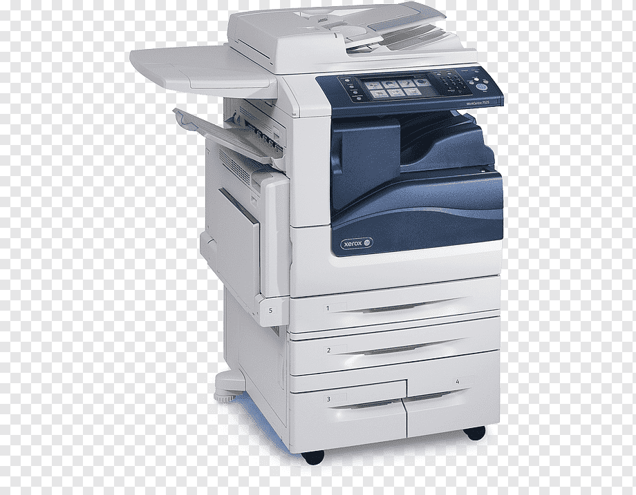
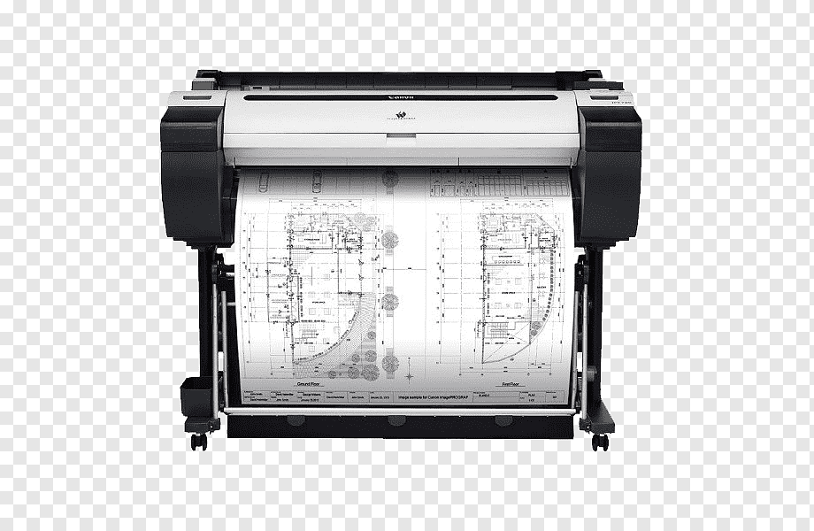

4.output
- text
- audio
- pictures
is the presenting of results and it come out in the form of
Output devices
- Printer
- Speaker
- Plotter
- Screen
SCREEN (monitor): Its a peripheral device which dispalys output referred as soft copy
MONIROR TYPES
| CRT | LCD | LED |
|---|---|---|
| INEXPENSIVE | EXPENSIVE | EXPENSIVE |
| BIG SPACE | SMALL SPACE | SMALL SPACE |
| A lot of power | Less power | Less power |
| Less color accuracy | Better color accuracy | Better color accuracy |
| Less efficient | Efficient | More efficient |
.png)
MONIROR SPECIFICATIONS
1. Screen size: It is the diagonal measurment of the screen surface in inches
2. resolution: The sharpness of images on the screen determined by the number of horizontal and vertical pixels that the screen can dispaly.
3.Dot pitch: The distance between each pixel on the screen (.22mm-.25mm-.28mm)
Printers
- Impact printers: contact with paper,uses ink,noisy,not commonly used and dot matrix pins
- Nonimpact printers
- Multifunction printer:It is a combination of Nonimpact printers,scanner and fax
- Plotter: Uses large sheet of paper,used in engineering and map making

| Inkjet | Laser |
|---|---|
| Afordaple-produce high quality color printouts quickly | Uses laser beams and static electricity |

